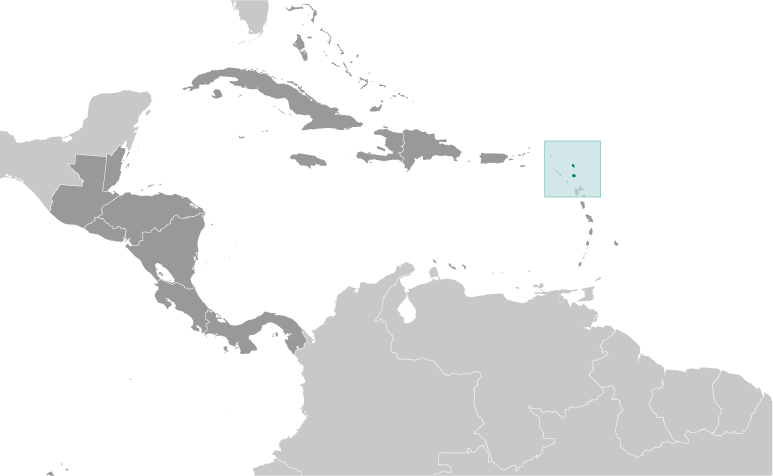
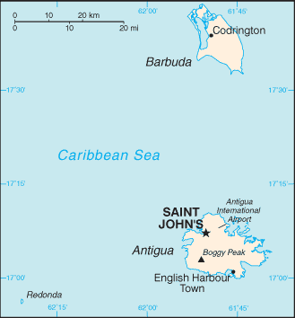
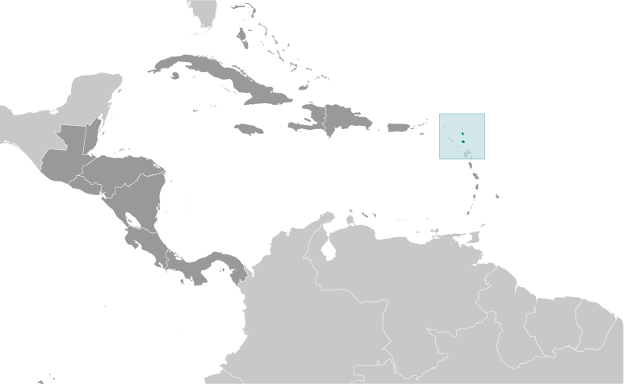
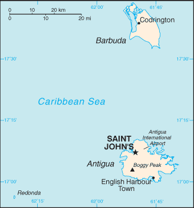

Central America and Caribbean :: ANTIGUA AND BARBUDA
Introduction :: ANTIGUA AND BARBUDA
-
The Siboney were the first people to inhabit the islands of Antigua and Barbuda in 2400 B.C., but Arawak Indians populated the islands when COLUMBUS landed on his second voyage in 1493. Early Spanish and French settlements were succeeded by an English colony in 1667. Slavery, established to run the sugar plantations on Antigua, was abolished in 1834. The islands became an independent state within the British Commonwealth of Nations in 1981. On 6 September 2017, Hurricane Irma passed over the island of Barbuda devastating the island and forcing the evacuation of the population to Antigua. Almost all the structures on Barbuda were destroyed and the vegetation stripped, but Antigua was spared the worst.
Geography :: ANTIGUA AND BARBUDA
-
Caribbean, islands between the Caribbean Sea and the North Atlantic Ocean, east-southeast of Puerto Rico17 03 N, 61 48 WCentral America and the Caribbeantotal: 442.6 sq km (Antigua 280 sq km; Barbuda 161 sq km)land: 442.6 sq kmwater: 0 sq kmnote: includes Redonda, 1.6 sq kmcountry comparison to the world: 2012.5 times the size of Washington, DC0 km153 kmterritorial sea: 12 nmcontiguous zone: 24 nmexclusive economic zone: 200 nmcontinental shelf: 200 nm or to the edge of the continental margintropical maritime; little seasonal temperature variationmostly low-lying limestone and coral islands, with some higher volcanic areasmean elevation: NAelevation extremes: lowest point: Caribbean Sea 0 mhighest point: Mount Obama 402 mNEGL; pleasant climate fosters tourismagricultural land: 20.5%arable land 9.1%; permanent crops 2.3%; permanent pasture 9.1%forest: 22.3%other: 57.2% (2011 est.)1.3 sq km (2012)the island of Antigua is home to approximately 97% of the population; nearly the entire population of Barbuda lives in Codringtonhurricanes and tropical storms (July to October); periodic droughtswater management - a major concern because of limited natural freshwater resources - is further hampered by the clearing of trees to increase crop production, causing rainfall to run off quicklyparty to: Biodiversity, Climate Change, Climate Change-Kyoto Protocol, Desertification, Endangered Species, Environmental Modification, Hazardous Wastes, Law of the Sea, Marine Dumping, Ozone Layer Protection, Ship Pollution, Wetlands, Whalingsigned, but not ratified: none of the selected agreementsAntigua has a deeply indented shoreline with many natural harbors and beaches; Barbuda has a large western harbor
People and Society :: ANTIGUA AND BARBUDA
-
94,731 (July 2017 est.)country comparison to the world: 197noun: Antiguan(s), Barbudan(s)adjective: Antiguan, Barbudanblack 87.3%, mixed 4.7%, hispanic 2.7%, white 1.6%, other 2.7%, unspecified 0.9% (2011 est.)English (official), Antiguan creoleProtestant 68.3% (Anglican 17.6%, Seventh Day Adventist 12.4%, Pentecostal 12.2%, Moravian 8.3%, Methodist 5.6%, Wesleyan Holiness 4.5%, Church of God 4.1%, Baptist 3.6%), Roman Catholic 8.2%, other 12.2%, unspecified 5.5%, none 5.9% (2011 est.)0-14 years: 23.09% (male 11,116/female 10,760)15-24 years: 16.83% (male 7,939/female 8,008)25-54 years: 42.19% (male 18,268/female 21,695)55-64 years: 9.83% (male 4,179/female 5,130)65 years and over: 8.06% (male 3,279/female 4,357) (2017 est.)total dependency ratio: 45.2youth dependency ratio: 35.7elderly dependency ratio: 9.6potential support ratio: 10.5 (2015 est.)total: 31.9 yearsmale: 30 yearsfemale: 33.5 years (2017 est.)country comparison to the world: 1031.21% (2017 est.)country comparison to the world: 10015.7 births/1,000 population (2017 est.)country comparison to the world: 1185.7 deaths/1,000 population (2017 est.)country comparison to the world: 1752.2 migrant(s)/1,000 population (2017 est.)country comparison to the world: 45the island of Antigua is home to approximately 97% of the population; nearly the entire population of Barbuda lives in Codringtonurban population: 23% of total population (2017)rate of urbanization: -0.38% annual rate of change (2015-20 est.)SAINT JOHN'S (capital) 22,000 (2014)at birth: 1.05 male(s)/female0-14 years: 1.03 male(s)/female15-24 years: 0.99 male(s)/female25-54 years: 0.84 male(s)/female55-64 years: 0.82 male(s)/female65 years and over: 0.76 male(s)/femaletotal population: 0.9 male(s)/female (2016 est.)total: 12.1 deaths/1,000 live birthsmale: 13.9 deaths/1,000 live birthsfemale: 10.2 deaths/1,000 live births (2017 est.)country comparison to the world: 118total population: 76.7 yearsmale: 74.6 yearsfemale: 79 years (2017 est.)country comparison to the world: 842 children born/woman (2017 est.)country comparison to the world: 1195.5% of GDP (2014)country comparison to the world: 1272.1 beds/1,000 population (2011)improved:urban: 97.9% of populationrural: 97.9% of populationtotal: 97.9% of populationunimproved:urban: 2.1% of populationrural: 2.1% of populationtotal: 2.1% of population (2015 est.)improved:urban: 91.4% of populationrural: 91.4% of populationtotal: 91.4% of populationunimproved:urban: 8.6% of populationrural: 8.6% of populationtotal: 8.6% of population (2011 est.)NANANAnote: active local transmission of Zika virus by Aedes species mosquitoes has been identified in this country (as of August 2016); it poses an important risk (a large number of cases possible) among US citizens if bitten by an infective mosquito; other less common ways to get Zika are through sex, via blood transfusion, or during pregnancy, in which the pregnant woman passes Zika virus to her fetus (2016)18.9% (2016)country comparison to the world: 1132.6% of GDP (2009)country comparison to the world: 159definition: age 15 and over has completed five or more years of schoolingtotal population: 99%male: 98.4%female: 99.4% (2012 est.)total: 14 yearsmale: 13 yearsfemale: 15 years (2012)
Government :: ANTIGUA AND BARBUDA
-
conventional long form: noneconventional short form: Antigua and Barbudaetymology: "antiguo" is Spanish for "ancient" or "old"; the island was discovered by Christopher COLUMBUS in 1493 and, according to tradition, named by him after the church of Santa Maria la Antigua (Old Saint Mary's) in Seville; "barbuda" is Spanish for "bearded" and the adjective may refer to the alleged beards of the indigenous people or to the island's bearded fig treesparliamentary democracy (Parliament) under a constitutional monarchy; a Commonwealth realmname: Saint John'sgeographic coordinates: 17 07 N, 61 51 Wtime difference: UTC-4 (1 hour ahead of Washington, DC, during Standard Time)6 parishes and 2 dependencies*; Barbuda*, Redonda*, Saint George, Saint John, Saint Mary, Saint Paul, Saint Peter, Saint Philip1 November 1981 (from the UK)Independence Day, 1 November (1981)several previous; latest presented 31 July 1981, effective 31 October 1981 (Antigua and Barbuda Constitutional Order 1981); amended 2009, 2011 (2016)common law based on the English modelhas not submitted an ICJ jurisdiction declaration; accepts ICCt jurisdictioncitizenship by birth: yescitizenship by descent: yesdual citizenship recognized: yesresidency requirement for naturalization: 7 years18 years of age; universalchief of state: Queen ELIZABETH II (since 6 February 1952); represented by Governor General Rodney WILLIAMS (since 14 August 2014)head of government: Prime Minister Gaston BROWNE (since 13 June 2014)cabinet: Council of Ministers appointed by the governor general on the advice of the prime ministerelections/appointments: the monarchy is hereditary; governor general appointed by the monarch on the advice of the prime minister; following legislative elections, the leader of the majority party or majority coalition usually appointed prime minister by the governor generaldescription: bicameral Parliament consists of the Senate (17 seats; members appointed by the governor general) and the House of Representatives (17 seats; members directly elected in single-seat constituencies by simple majority vote to serve 5-year terms)elections: House of Representatives - last held on 12 June 2014 (next to be held in 2019)election results: percent of vote by party - ALP 56.5%, UPP 42%, other 1.5%; seats by party - ALP 14, UPP 3highest court(s): the Eastern Caribbean Supreme Court (ECSC) is the superior court of the Organization of Eastern Caribbean States; the ECSC - headquartered on St. Lucia - consists of the Court of Appeal - headed by the chief justice and 4 judges - and the High Court with 18 judges; the Court of Appeal is itinerant, travelling to member states on a schedule to hear appeals from the High Court and subordinate courts; High Court judges reside at the member states with 2 assigned to Antigua and Barbudajudge selection and term of office: chief justice of Eastern Caribbean Supreme Court appointed by the Her Majesty, Queen ELIZABETH II; other justices and judges appointed by the Judicial and Legal Services Commission; Court of Appeal justices appointed for life with mandatory retirement at age 65; High Court judges appointed for life with mandatory retirement at age 62subordinate courts: Industrial Court; Magistrates' CourtsAntigua Caribbean Liberation Movement or ACLMAntigua Labor Party or ALP [Gaston BROWNE]Barbuda People's Movement or BPM [Trevor WALKER]Barbuda People's Movement for Change [Arthur NIBBS]Barbudans for a Better Barbuda [Ordrick SAMUEL]Progressive Labor Movement or PLMUnited National Democratic Party or UNDPUnited Progressive Party or UPP [W. Baldwin SPENCER] (a coalition of ACLM, PLM, UNDP)Antigua Trades and Labor Union or ATLU [Wigley GEORGE]People's Democratic Movement or PDM [Hugh MARSHALL]ACP, AOSIS, C, Caricom, CDB, CELAC, FAO, G-77, IBRD, ICAO, ICC (NGOs), ICCt, ICRM, IDA, IFAD, IFC, IFRCS, ILO, IMF, IMO, IMSO, Interpol, IOC, IOM, ISO (subscriber), ITU, ITUC (NGOs), MIGA, NAM (observer), OAS, OECS, OPANAL, OPCW, Petrocaribe, UN, UNCTAD, UNESCO, UPU, WFTU (NGOs), WHO, WIPO, WMO, WTOchief of mission: Ambassador Sir Ronald SANDERS (since 17 September 2015)chancery: 3216 New Mexico Avenue NW, Washington, DC 20016telephone: [1] (202) 362-5122FAX: [1] (202) 362-5525consulate(s) general: Miami, New Yorkthe US does not have an embassy in Antigua and Barbuda; the US Ambassador to Barbados is accredited to Antigua and Barbudared, with an inverted isosceles triangle based on the top edge of the flag; the triangle contains three horizontal bands of black (top), light blue, and white, with a yellow rising sun in the black band; the sun symbolizes the dawn of a new era, black represents the African heritage of most of the population, blue is for hope, and red is for the dynamism of the people; the "V" stands for victory; the successive yellow, blue, and white coloring is also meant to evoke the country's tourist attractions of sun, sea, and sandfallow deer; national colors: red, white, blue, black, yellowname: "Fair Antigua, We Salute Thee"lyrics/music: Novelle Hamilton RICHARDS/Walter Garnet Picart CHAMBERSnote: adopted 1967; as a Commonwealth country, in addition to the national anthem, "God Save the Queen" serves as the royal anthem (see United Kingdom)
Economy :: ANTIGUA AND BARBUDA
-
Tourism continues to dominate Antigua and Barbuda's economy, accounting for nearly 60% of GDP and 40% of investment. The dual-island nation's agricultural production is focused on the domestic market and constrained by a limited water supply and a labor shortage stemming from the lure of higher wages in tourism and construction. Manufacturing comprises enclave-type assembly for export with major products being bedding, handicrafts, and electronic components.Like other countries in the region, Antigua's economy was severely hit by effects of the global economic recession in 2009. The country suffered from the collapse of its largest private sector employer, a steep decline in tourism, a rise in debt, and a sharp economic contraction between 2009 and 2011. Antigua has not yet returned to its pre-crisis growth levels.Prospects for economic growth in the medium term will continue to depend on tourist arrivals from the US, Canada, and Europe and could be disrupted by potential damage from natural disasters. The new government, elected in 2014 and led by Prime Minister Gaston Browne, continues to face significant fiscal challenges. The government places some hope in a new Citizenship by Investment Program to both reduce public debt levels and spur growth.$2.288 billion (2016 est.)$2.145 billion (2015 est.)$2.039 billion (2014 est.)note: data are in 2016 dollarscountry comparison to the world: 192$1.46 billion (2016 est.)5.3% (2016 est.)4.1% (2015 est.)5.1% (2014 est.)country comparison to the world: 74$25,400 (2016 est.)$24,400 (2015 est.)$23,700 (2014 est.)note: data are in 2016 dollarscountry comparison to the world: 7624.5% of GDP (2016 est.)30.7% of GDP (2015 est.)26.4% of GDP (2014 est.)country comparison to the world: 109household consumption: 69.2%government consumption: 16.3%investment in fixed capital: 21.9%investment in inventories: 0.1%exports of goods and services: 32.9%imports of goods and services: -40.4% (2016 est.)agriculture: 2.3%industry: 20.2%services: 77.5% (2016 est.)cotton, fruits, vegetables, bananas, coconuts, cucumbers, mangoes, sugarcane; livestocktourism, construction, light manufacturing (clothing, alcohol, household appliances)3.2% (2016 est.)country comparison to the world: 7430,000 (1991)country comparison to the world: 205agriculture: 7%industry: 11%services: 82% (1983)11% (2014 est.)country comparison to the world: 138NA%lowest 10%: NA%highest 10%: NA%revenues: $279.1 millionexpenditures: $301.7 million (2016 est.)20% of GDP (2016 est.)country comparison to the world: 156-1.6% of GDP (2016 est.)country comparison to the world: 7692.7% of GDP (2016 est.)99.1% of GDP (2015 est.)country comparison to the world: 221 April - 31 March-0.5% (2016 est.)1% (2015 est.)country comparison to the world: 296.5% (31 December 2010)6.5% (31 December 2009)country comparison to the world: 609.61% (31 December 2016 est.)9.84% (31 December 2015 est.)country comparison to the world: 87$293 million (31 December 2016 est.)$257.1 million (31 December 2015 est.)country comparison to the world: 180$1.194 billion (31 December 2016 est.)$1.148 billion (31 December 2015 est.)country comparison to the world: 170$913 million (31 December 2016 est.)$882.6 million (31 December 2015 est.)country comparison to the world: 168$2 million (2016 est.)$-175.4 million (2015 est.)country comparison to the world: 77$56.5 million (2016 est.)$58 million (2015 est.)country comparison to the world: 200petroleum products, bedding, handicrafts, electronic components, transport equipment, food and live animalsPoland 53.2%, UK 12.7%, Cameroon 7.2%, Germany 5.5%, US 4.5% (2016)$407.3 million (2016 est.)$439.2 million (2015 est.)country comparison to the world: 194food and live animals, machinery and transport equipment, manufactures, chemicals, oilUS 44.3%, Japan 4.7%, China 4.1% (2016)$441.2 million (31 December 2012)$458 million (June 2010)country comparison to the world: 181East Caribbean dollars (XCD) per US dollar -2.7 (2016 est.)2.7 (2015 est.)2.7 (2014 est.)2.7 (2013 est.)2.7 (2012 est.)
Energy :: ANTIGUA AND BARBUDA
-
population without electricity: 9,358electrification - total population: 91%electrification - urban areas: 100%electrification - rural areas: 80% (2012)330 million kWh (2015 est.)country comparison to the world: 178306.9 million kWh (2015 est.)country comparison to the world: 1830 kWh (2016 est.)country comparison to the world: 970 kWh (2016 est.)country comparison to the world: 11787,000 kW (2015 est.)country comparison to the world: 18096.6% of total installed capacity (2015 est.)country comparison to the world: 450% of total installed capacity (2015 est.)country comparison to the world: 340% of total installed capacity (2015 est.)country comparison to the world: 2154.6% of total installed capacity (2015 est.)country comparison to the world: 990 bbl/day (2016 est.)country comparison to the world: 1030 bbl/day (2014 est.)country comparison to the world: 850 bbl/day (2014 est.)country comparison to the world: 880 bbl (1 January 2017 es)country comparison to the world: 1030 bbl/day (2014 est.)country comparison to the world: 1125,000 bbl/day (2015 est.)country comparison to the world: 17790.55 bbl/day (2014 est.)country comparison to the world: 1224,884 bbl/day (2014 est.)country comparison to the world: 1680 cu m (2013 est.)country comparison to the world: 1020 cu m (2013 est.)country comparison to the world: 1530 cu m (2013 est.)country comparison to the world: 580 cu m (2013 est.)country comparison to the world: 800 cu m (1 January 2014 es)country comparison to the world: 109600,000 Mt (2013 est.)country comparison to the world: 177
Communications :: ANTIGUA AND BARBUDA
-
total subscriptions: 22,504subscriptions per 100 inhabitants: 24 (July 2016 est.)country comparison to the world: 172total: 126,000subscriptions per 100 inhabitants: 136 (July 2016 est.)country comparison to the world: 189general assessment: good automatic telephone systemdomestic: fixed-line teledensity roughly 24 per 100 persons (2016); mobile-cellular teledensity is about 135 per 100 persons (2015)international: country code - 1-268; landing points for the East Caribbean Fiber System (ECFS) and the Global Caribbean Network (GCN) submarine cable systems with links to other islands in the eastern Caribbean extending from the British Virgin Islands to Trinidad; satellite earth stations - 2; tropospheric scatter to Saba (Netherlands) and Guadeloupe (France) (2016)state-controlled Antigua and Barbuda Broadcasting Service (ABS) operates 1 TV station; multi-channel cable TV subscription services are available; ABS operates 1 radio station; roughly 15 radio stations, some broadcasting on multiple frequencies (2009).agtotal: 60,000percent of population: 65.2% (July 2016 est.)country comparison to the world: 174
Transportation :: ANTIGUA AND BARBUDA
-
number of registered air carriers: 1inventory of registered aircraft operated by air carriers: 9annual passenger traffic on registered air carriers: 1,039,809annual freight traffic on registered air carriers: 526,545 mt-km (2015)V2 (2016)3 (2013)country comparison to the world: 193total: 22,438 to 3,047 m: 1under 914 m: 1 (2017)total: 1under 914 m: 1 (2013)total: 1,170 kmpaved: 386 kmunpaved: 784 km (2011)country comparison to the world: 183total: 1,257by type: bulk carrier 49, cargo 753, carrier 6, chemical tanker 4, container 407, liquefied gas 12, refrigerated cargo 7, roll on/roll off 17, vehicle carrier 2foreign-owned: 1,215 (Albania 1, Colombia 1, Denmark 20, Estonia 10, Germany 1094, Greece 4, Iceland 10, Latvia 16, Lithuania 3, Mexico 1, Netherlands 17, Norway 9, NZ 2, Poland 2, Russia 3, Switzerland 7, Turkey 7, UK 1, US 7) (2010)country comparison to the world: 9major seaport(s): Saint John's
Military and Security :: ANTIGUA AND BARBUDA
-
Ministry of National Security, Royal Antigua and Barbuda Defense Force (includes Antigua and Barbuda Coast Guard) (2012)18 years of age for voluntary military service; no conscription; Governor-General has powers to call up men for national service and set the age at which they could be called up (2012)
Transnational Issues :: ANTIGUA AND BARBUDA
-
nonecurrent situation: Antigua and Barbuda is a destination and transit country for adults and children subjected to sex trafficking and forced labor; forced prostitution has been reported in bars, taverns, and brothels, while forced labor occurs in domestic service and the retail sectortier rating: Tier 2 Watch List – Antigua and Barbuda does not fully comply with the minimum standards for the elimination of trafficking; however, it is making significant efforts to do so; the government made no discernible progress in convicting traffickers in 2014 but charged two individuals in separate cases; efforts to convict traffickers have been impeded by a 2014 ruling that found the 2010 anti-trafficking act was unconstitutional because jurisdiction rests with the Magistrate’s Court rather than the High Court; no new prosecutions, convictions, or punishments were recorded in 2014; credible sources have raised concerns about trafficking-related complicity among some off-duty police officers, which could hinder investigations or victims willingness to report offenses; prevention efforts were sustained, but progress in protecting victims was uneven; seven victims were assisted, which was an increase over 2013 (2015)considered a minor transshipment point for narcotics bound for the US and Europe; more significant as an offshore financial center